Progression notes
Current progress
Implemented
- Bilinear reference reader: A full-resolution sampler that every later representation is read through, so quality differences come from the representation and not the sampling code.
- S3TC/DXT1 baseline: Classic 4×4 block compression from scratch. It gives a fixed 6× reduction and lands around 41–43 dB, which is the bar the learned version has to beat.
- Seam-aware S3TC: A cross-boundary seam metric plus three endpoint-selection variants (error diffusion, boundary-weighted refit, seam-energy ICM). ICM also raises PSNR. All keep the fixed 6×.
- Learned representation: A multi-resolution feature grid decoded by a small MLP, fit per texture, with a training loop (fixed texel set, random minibatches, Adam). Wrapped behind the same interface as the block methods.
- Full comparison: all three sizes on all three textures (five seeds each), with PSNR-over-training and size-vs-quality plots and S3TC overlaid.
Every method now exposes the same compress(texture) / sample(u, v)
interface, so they can be compared on one size-vs-quality axis.
To implement next
- Post-training 8-bit quantization of the stored grid (and optionally the MLP).
- Source a few textures of my own for the frequency/structure analysis.
- Trim this progression doc into the final report.
The shared read convention
A texel's center sits at (i + 0.5) / size, and a
coordinate u maps into continuous texel space as x = u * width - 0.5, likewise
for v/y. Lookups outside the texture clamp to the border (replicate padding),
matching PyTorch's F.grid_sample(..., align_corners=False, padding_mode="border").
Bilinear sampling
Given (u, v), find the four surrounding texels, take the fractional position
(s, t) inside the cell, and blend:
The four corners are named for their offsets: c00 is the top-left of the cell and
c11 the bottom-right. It's vectorized over a batch of coordinates, so the same function
handles a few probes or a full megapixel pass.
Correctness validated by:
- Sampling an image at its own texel centers reproduces it exactly (PSNR = ∞), which pins down the texel-center convention.
- On random coordinates it matches
F.grid_sample(align_corners=False, padding_mode="border") to floating-point tolerance, borders included.
S3TC / DXT1 block compression
S3TC splits the image into 4×4 blocks and spends a fixed 64 bits per block:
- Two endpoint colors, each a 16-bit RGB565 value (2 × 16 = 32 bits).
- Sixteen 2-bit indices, one per texel (16 × 2 = 32 bits).
In total, it takes 8 bytes per 16 texels, or 4 bits per texel. This is 6× smaller than 24-bit RGB. A four-color palette is interpolated from the endpoints, and each texel stores the index of its nearest palette color:
When decoding, the sample(u, v) path decodes the image once and then
bilinearly samples it with the reader above, so S3TC is read exactly like every other representation.
Picking the endpoints
The endpoints dominate block quality, so I choose them per block in two steps:
- Principal color axis (PCA). Subtract the block mean, approximate the dominant direction of variation with a few power iterations on the 3×3 covariance, project the 16 texels onto that axis, and take the two extremes. This lines the palette up with the direction the block actually varies in.
- Least-squares refit. Assign each texel to its nearest palette entry, then solve for
the endpoints that best reconstruct those colors. Palette entries are fixed blends of the endpoints
(
c2andc3above), so each block is a tiny 2-variable least-squares problem with a closed form. Repeat this assign-and-refit twice.
Flat blocks, where the fit is underdetermined, just keep their previous endpoints instead of dividing by a near-zero determinant. Final endpoints are quantized to RGB565, and blocks are always written in the 4-color mode with the larger code first.
RGB565, and why the divide-by-levels shortcut isn't exact
Each endpoint channel is quantized by multiplying by its level count, rounding, and dividing back:
levels = (31, 63, 31) # 5, 6, 5 bits for R, G, B
q = round(c * levels) # integer 5-6-5 code
c_hat = q / levels # back to [0, 1]
This is close to, but not exactly, how hardware maps a 5- or 6-bit code back to a value. Hardware
expands a code by bit replication into 8 bits, so the true value would be round(q·255/31)/255. The
shortcut implemented instead returns q/31. Since 255/31 isn't an
integer, bit replication lands on one of 256 fixed 8-bit levels, while q/levels can fall
between them. The difference is under a 1/255 step and both maps are
monotonic with the same half-step rounding error, so the difference is not significant.
Results
S3TC is fixed-ratio, so all three textures compress to exactly the same size. PSNR is measured on the
decoded image against the original, both normalized to [0, 1], with
PSNR = −10·log10(MSE).
| Texture | PSNR (dB) | S3TC size | Original size | Compression |
|---|---|---|---|---|
| gradient (smooth, low-frequency) | 42.89 | 128 KB | 768 KB | 6.00× smaller |
| bricks (structured, sharp edges) | 41.39 | 128 KB | 768 KB | 6.00× smaller |
| clouds (fractal, multi-scale) | 42.63 | 128 KB | 768 KB | 6.00× smaller |
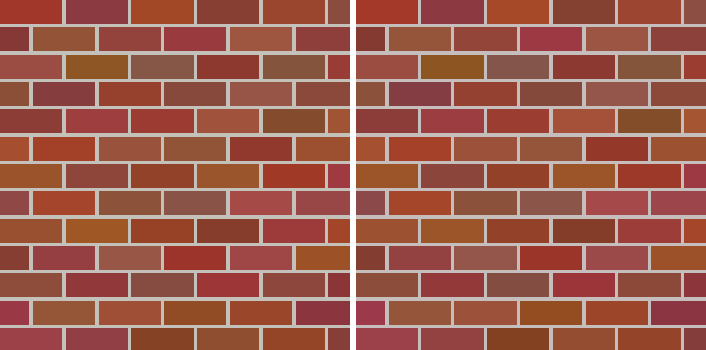
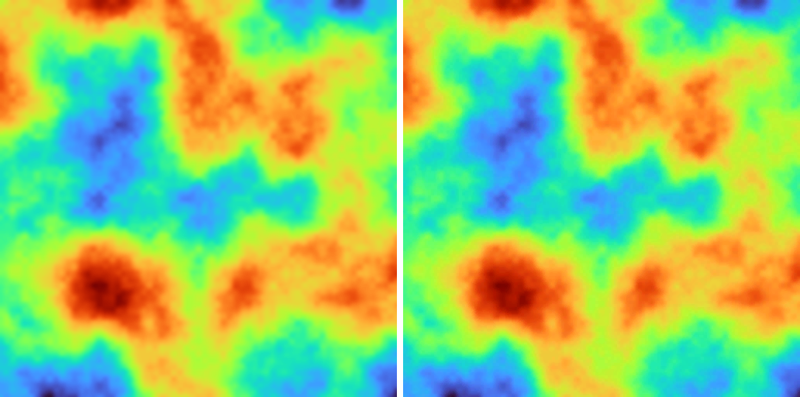
S3TC is sometimes not good
The clearest failure is smooth gradients. The crops below are 96×96 texels, nearest-neighbor upscaled 4×,
so each 4×4 block becomes a 16×16 square. Figures are regenerated by
scripts/make_figures.py.
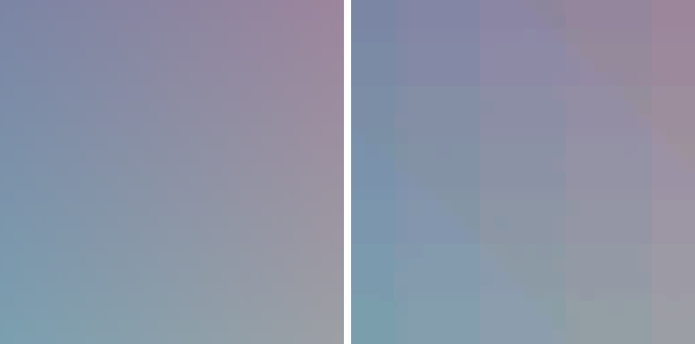
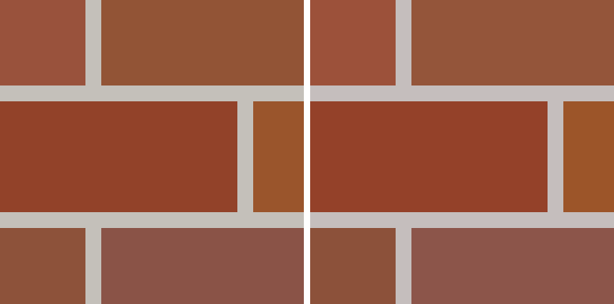
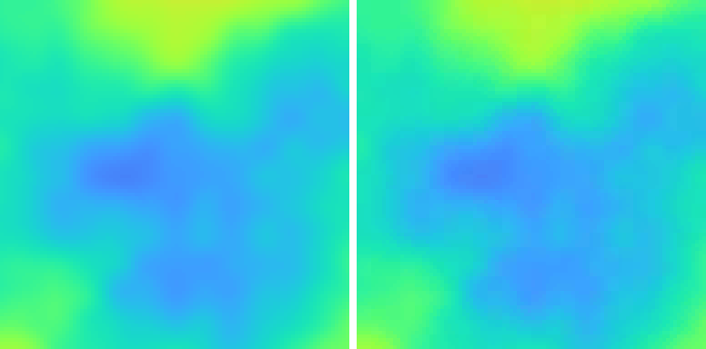
This behavior is because of the nature of S3TC and cannot really be improved by the per-block fit alone.
- The palette is four points on the segment between two endpoints. A smooth image varies in two dimensions inside a block, but the block can only represent colors near that 1-D line, so the leftover error shows up as a color step at every block boundary, causing the banding.
- High-frequency detail that doesn't align with the 4×4 grid can't be represented; edges get smeared or stepped.
- Every block costs the same 64 bits whether it's flat or busy, and nothing is shared between blocks.
- RGB565 rounds each endpoint to 5 or 6 bits before the palette is even built, adding a second error source on top of the palette fit.
At this stage the baseline is 128 KB (6×) at roughly 41–43 dB. A learned representation will replace the fixed palette with a shared feature grid plus an MLP, so its size will be tunable instead of fixed. Because of this, I will compare them by matching size then comparing PSNR and matching PSNR then comparing size.
Can the S3TC endpoint choice reduce the blocking issues?
The 4-colors-per-block limit is structural, but the baseline picks endpoints block by block with no idea what its neighbors chose, so it leaves recoverable seam on the table. I kept the bit budget and the decoder exactly the same and changed only how the endpoints are chosen, trying three neighbor-aware or global approaches in increasing cost.
Seam metric
To measure how bad/visible seams were, I made a seam error metric. For every pair of adjacent texels straddling a block boundary, compare the reconstruction's color step to the original's:
- Subtracting the original's own gradient means a perfect reconstruction scores 0 even on a textured image, and only added discontinuities count.
- Normalized color units, lower is better. It is not identical to perceived blocking, but it should be well-correlated.
- Baseline: gradient 0.00225, clouds 0.00690, bricks 0.00059.
- There is a floor: RGB565 rounding alone contributes about half the seam. Encoding with float endpoints drops the gradient seam from 0.00225 to 0.00119, so endpoint quantization is a real part of the artifact.
Endpoint tuning
- Instead of selecting endpoints from scratch using a new selection function, I first ran the local PCA-based S3TC endpoint selector (the standard one) and then created loss functions that took into account the blocking between a block's neighbors and ran gradient descent-like algorithms with these loss functions achieve incremental improvement. I experimented with a few different loss functions and ways of iterating through and incrementing endpoints. Some worked better than others.
Attempt 1: Block error diffusion
- Idea: a block's reconstruction error on its right and bottom edges is fed forward into the target colors of the block to its right or below, before that block is fit, so errors cancel across the seam instead of stacking up.
- Tuning Hyperparameters: the seam falls as alpha drops and bottoms out around 0.1 (mean seam ×0.94 across gradient and clouds); by 0.75 it adds seam instead of removing it. PSNR moves the other way, rising with alpha until about 0.5 (+0.28 dB). It converges within two passes, so I set alpha 0.1 and stop early.
- Results: gradient seam −8% and +0.18 dB, clouds seam −4% and +0.14 dB.
Attempt 2: Boundary-weighted refit
- Idea: refit each block's edge texels toward
neighbor_decoded + original_step, so the block's step across the seam matches the original's, and weight edge texels higher. This targets the seam metric directly. - Tuning Hyperparameters: gamma 0.5 to 0.75 minimizes the seam (mean ×0.91); raising the boundary weight to 2 trims a little more but starts costing PSNR, so I leave it at 1.0. It converges after one or two passes.
- Results: best seam on the gradient (−13%) with a small PSNR gain. On clouds it trims seam −5% but gives up 0.1 dB.
Attempt 3: Seam-energy search (ICM)
- Idea: iterated conditional modes. Each block tries candidate endpoint pairs
(its current pair, the PCA extremes, the baseline least-squares fit, and blends toward each of
its four neighbors), decodes them, and keeps the one minimizing its own squared error plus
lam × added-seam. - The candidates are evaluated on the quantized decode, so the search also finds endpoints that survive RGB565 rounding, which is why PSNR improves too.
- Tuning Hyperparameters: lam sets the trade-off. Low lam (0.1 to 0.5) maximizes PSNR (+1.1 dB) while still cutting seam; lam 1 to 2 is the seam sweet spot (mean ×0.885); lam 10 and above over-constrains the clouds and PSNR collapses. beta barely moves the seam but higher values favor smooth textures (up to +2.3 dB on the gradient at beta 0.8) at a small cost on clouds, so 0.5 stays balanced. Seam keeps improving out to 8 to 12 passes; 4 captures most of it.
- Results: best overall. Gradient +1.34 dB and seam −9%; clouds +0.16 dB and seam −14%.
Results
| Texture | Method | PSNR (dB) | Seam error |
|---|---|---|---|
| gradient | baseline | 42.89 | 0.002247 |
| gradient | diffusion | 43.07 | 0.002072 |
| gradient | boundary | 43.00 | 0.001959 |
| gradient | ICM | 44.23 | 0.002046 |
| clouds | baseline | 42.63 | 0.006901 |
| clouds | diffusion | 42.77 | 0.006595 |
| clouds | boundary | 42.53 | 0.006575 |
| clouds | ICM | 42.80 | 0.005936 |
| bricks | all methods | 41.39 | 0.000585 |
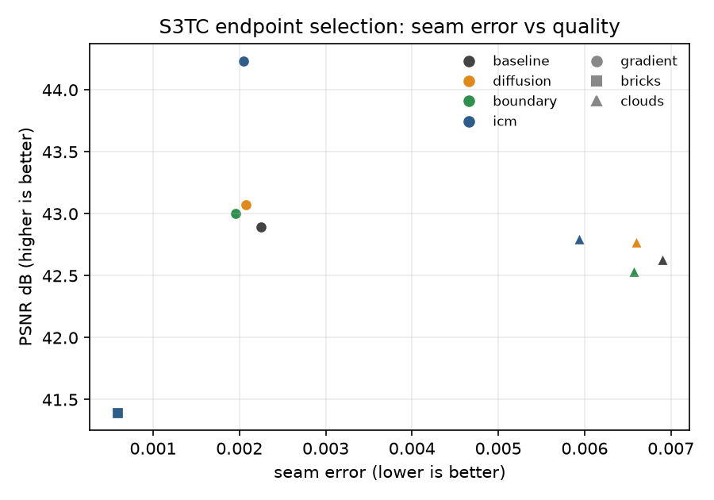
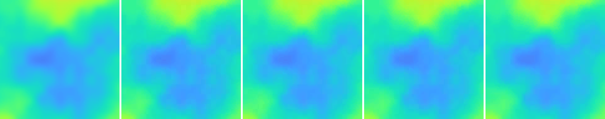
Take aways
- ICM (method 3) is the best all-rounder: the only method that improves PSNR on every non-flat texture and cuts the seam the most on clouds, for a few passes of extra compute and no change in stored size.
- Boundary refit (method 2) is the cheapest seam win and wins outright on the smooth gradient, but it can trade a little PSNR for the seam on busier textures.
- Error diffusion (method 1) is a mild, safe nudge only at low strength.
- Bricks is unchanged by all three. Its blocks are flat, so the baseline already has essentially no added step to fix. A useful sanity check that the methods only touch recoverable seam.
- Quantization is the remaining floor. None of these remove the roughly half of the seam that comes from RGB565 rounding. Coordinating the endpoint quantization itself, or searching the RGB565 lattice globally, is probably the best next move to reduce blocking.
- All of this is free in stored size: the representation is still exactly 8 bytes per block (a fixed 6×), only the endpoint choice changed.
Neural representation
Instead of using a fixed palette as in S3TC, a multi-resolution feature grid and MLP is used to turn blended features into an RGB color.
Feature grid
- One learnable
(1, feat_dim, R, R)tensor per resolution (e.g. 16, 32, 64, 128). - A lookup bilinearly blends the four surrounding feature vectors and concatenates across
levels, so
Llevels of widthfeat_dimgiveL × feat_dimchannels. Coarse levels carry broad structure, fine levels carry detail. - The lookup uses the same texel-center convention as the full-resolution sampler
(
grid_sample,align_corners=False, border clamping). A single 3-channel level reproduces the sampler to 1e-7, so quality differences come from the representation, not from how the texture is read.
Decoder
- Two 64-wide ReLU hidden layers, then a sigmoid head for RGB in [0, 1].
- The decoder is very small (about 4.5k to 5.4k weights) compared to the grid, so almost all of the storage costs for this representation come from the feature grid.
Training
- The training set is every texel center of the image, and each step draws a random 16,384-texel minibatch.
- Trained via adaptive moment estimation (Adam) at 1e-2, 2000 steps, MSE loss. Minimizing loss also happens to be maximizing PSNR, since they are directly correlated with
PSNR = −10·log10(loss).
Sizes
| Model | Levels | feat_dim | features | params | KB (f32) | vs raw |
|---|---|---|---|---|---|---|
| small | (64) | 2 | 2 | 12,739 | 49.8 | 15.4× |
| medium | (16, 32, 64) | 2 | 6 | 15,555 | 60.8 | 12.6× |
| large | (16, 32, 64, 128) | 4 | 16 | 92,483 | 361.3 | 2.1× |
- The three sizes share the same decoder shape but have different feature grids.
- Storage is dominated by the grid, and even the small model is well under S3TC's fixed 6×.
Results
Size vs quality
All three architectures on each of the three textures, averaged over five seeds (GPU training has a few dB of run-to-run spread). S3TC is the fixed 6× point at 128 KB.
| Texture | Model | PSNR (dB) | size | ratio |
|---|---|---|---|---|
| gradient | small | 53.1 ± 4.0 | 49.8 KB | 15.4× |
| gradient | medium | 53.9 ± 4.7 | 60.8 KB | 12.6× |
| gradient | large | 58.3 ± 0.6 | 361.3 KB | 2.1× |
| gradient | S3TC | 42.9 | 128.0 KB | 6.0× |
| bricks | small | 32.3 ± 0.8 | 49.8 KB | 15.4× |
| bricks | medium | 36.0 ± 0.5 | 60.8 KB | 12.6× |
| bricks | large | 41.5 ± 1.6 | 361.3 KB | 2.1× |
| bricks | S3TC | 41.4 | 128.0 KB | 6.0× |
| clouds | small | 39.1 ± 0.5 | 49.8 KB | 15.4× |
| clouds | medium | 41.0 ± 0.4 | 60.8 KB | 12.6× |
| clouds | large | 48.8 ± 1.0 | 361.3 KB | 2.1× |
| clouds | S3TC | 42.6 | 128.0 KB | 6.0× |
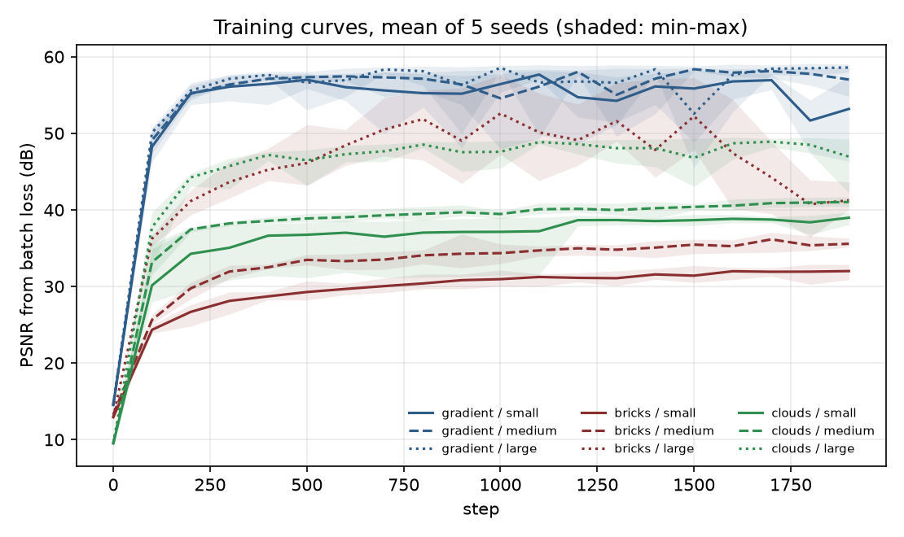
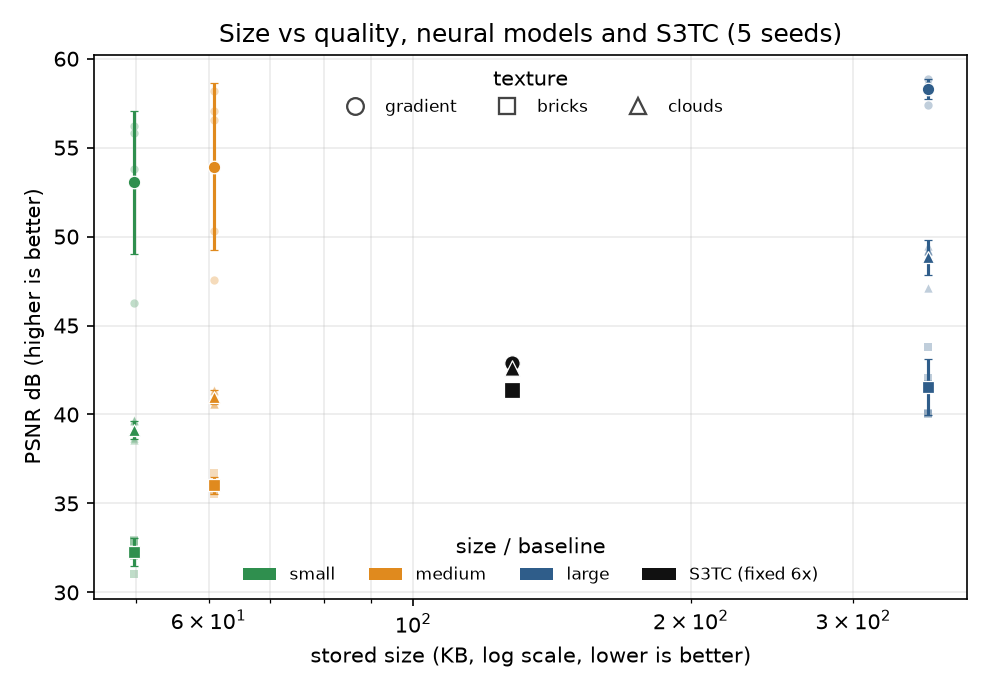
Reconstructions
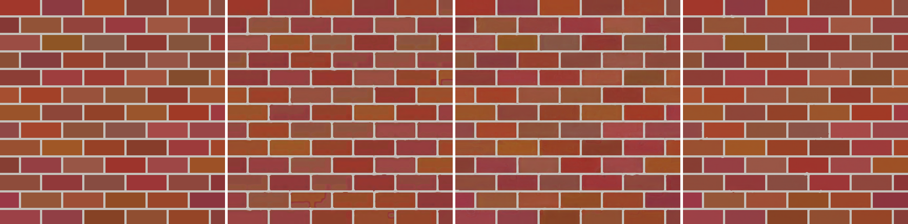
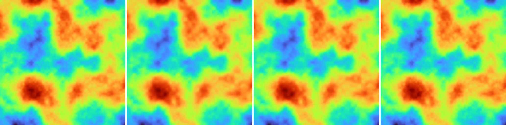
Which architecture wins, and does it beat S3TC?
- Gradient: all three beat S3TC by 10 dB or more, and the small model is smaller than S3TC while doing it, so the neural model dominates outright. Large is the best (58.3 dB) and the most stable; small and medium occasionally stall at 46 to 50 dB on an unlucky seed even though the texture is easy.
- Bricks: large is the only size that beats S3TC (41.4 dB), but it takes 3x the memory of S3TC. I would say the data is inconclusive for determining which performs better or worse here, but it makes sense that S3TC is more efficient than a learned continuous representation for encoding very binary textures.
- Clouds: large wins by a wide margin (48.8 dB vs 41.0 for medium), since only it has both coarse and fine levels plus enough features for the fractal detail. Similarly to bricks, only large beats S3TC (42.6 dB).
- Beat S3TC? Gradient: yes. Bricks and clouds: only the large model beats S3TC on PSNR, but it is 3x as large as S3TC. Small and medium have better ratios (15.4× and 12.6×) but worse quality, so for the structured and fractal textures the two methods do not have a clear winner.
Log
- 2026-09-20Project scaffold, environment, and CUDA setup. Bilinear sampler
with the shared read convention, verified against
grid_sample. S3TC/DXT1 baseline with PCA endpoints and least-squares refits; 6× fixed at ~41–43 dB. Figures and this page added. - 2026-09-20Added a cross-boundary seam metric and three seam-aware endpoint-selection variants (block error diffusion, boundary-weighted refit, seam-energy ICM). ICM improves PSNR and cuts the seam the most; boundary refit gives the best seam on smooth gradients; error diffusion is a mild nudge. All keep the fixed 6× size.
- 2026-09-20Added the learned representation: multi-resolution feature grid, decoder MLP, and the training loop. First fit (small, gradient) reaches ~54–58 dB in ~9s at 15.4×, versus S3TC's 42.9 dB at 6×.
- 2026-09-20Full comparison done: 3 sizes × 3 textures × 5 seeds. The neural model wins outright on the smooth gradient (small beats S3TC at a quarter of the size); on bricks and clouds only the large model beats S3TC on PSNR, at 2.1× versus 6×. Added the PSNR-vs-size and training-curve plots and the per-texture reconstructions.